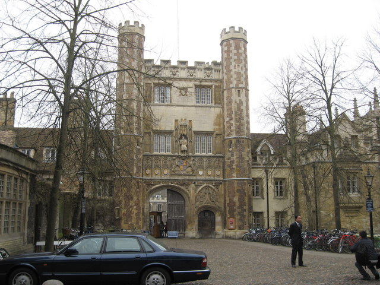
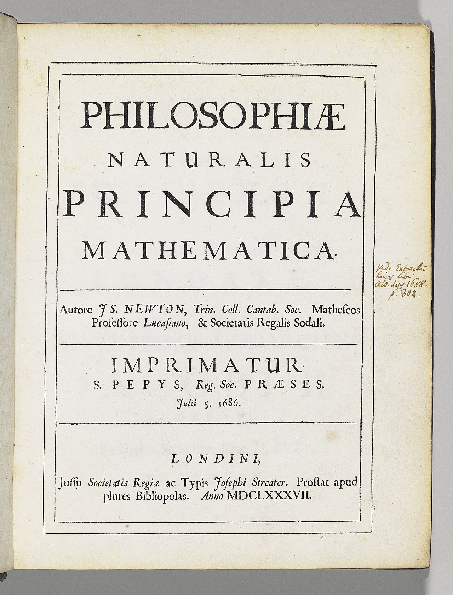

出生：一个没人看好的早产儿
12 月 25 日 · 英格兰林肯郡伍尔索普庄园

牛顿出生在圣诞节，是个早产儿，小到据说能装进一升的杯子里。父亲在他出生前三个月就去世了，母亲在他三岁时改嫁，把他留给外祖母抚养。
没有人会想到，这个从小跟外祖母长大的乡下孩子，将来会改变人类看待世界的方式。他后来在笔记本里写："我好像是一个在海边玩耍的孩子，偶尔拾到一颗光滑的石子或一只美丽的贝壳，而真理的大海在我面前尚未被认识。"
格兰瑟姆文法学校
寄宿在药剂师舅舅家 · 迷上手工与机械
12 岁起，牛顿到镇上的文法学校读书，寄住在经营药房的舅舅家里。他成绩并不拔尖，却对动手做东西格外着迷：风车、日晷、水钟、会飞的小风筝，都是他自己琢磨着做出来的。
这些"小制作"背后，其实已经藏着他一辈子都在用的本事——把看到的现象，想办法用机械和数学讲清楚。
进入剑桥三一学院
以"减费生"身份入学 · 边打工边读书

牛顿以"减费生"（靠给富家子弟跑腿、打扫换取学费）的身份进入剑桥三一学院。那时大学主要教亚里士多德那套延续千年的老学问，但牛顿很快就被当时刚刚传入的"新科学"吸引——尤其是笛卡尔关于运动和宇宙的观点。
他疯狂地买书、做笔记，在书页边写满批注。这些笔记后来被称为他的"哲学笔记本"，里面已经开始出现关于运动、颜色和光的最初思考。
瘟疫停课，史上最著名的"休学两年"
伦敦大瘟疫 · 剑桥关闭 · 回乡避难

1665 年，伦敦爆发大瘟疫，短短时间死了十几万人。剑桥大学关门，23 岁的牛顿收拾行李回到乡下老家。接下来的近两年里，他几乎同时开始了三件大事：
① 琢磨"一直在变的东西该怎么算"——后来叫微积分；
② 用三棱镜拆开阳光——光学；
③ 思考让苹果落地的力能不能一直延伸到月球——万有引力。
他后来自己回忆："在那两年里，我正处于发明的盛年，对数学和哲学的思考，比此后任何时候都多。"后人把这段日子称作他的"奇迹年"。
棱镜实验：白光不是"干净"的光
用一块三棱镜，拆穿了千年的误解
人们在那之前普遍相信：颜色是光在穿过介质时被"污染"的结果，白光是纯净的。牛顿用实验推翻了它——他把一束阳光送进棱镜，墙上出现红橙黄绿蓝靛紫的彩带；再让某一道颜色穿过第二块棱镜，它不会再变出别的颜色。
结论很干脆：白光本来就是各种颜色混在一起，棱镜只是把它们"分家"。他还用这个思路解释了彩虹——雨滴就是大自然的水晶棱镜。
26 岁当上卢卡斯数学教授
剑桥最年轻的"数学首席"之一
因为一份关于"用级数求曲线面积"的手稿被前辈看中，牛顿在 26 岁被推荐担任卢卡斯数学教授——这是剑桥数学界最高的讲席之一。后来坐过同一把椅子的，还有两百多年后的斯蒂芬·霍金。
不过，他在讲台上的课常常只有三两个学生来听。他的讲义太难了，连当时的教授同行都未必跟得上。
发表《光与颜色》论文，吵了一辈子
首次公开光学成果 · 与胡克论战开始

牛顿在皇家学会宣读了他的第一篇重要论文，论证颜色的本质。没想到引来一群人的反对，其中最较真的是科学家罗伯特·胡克。两人从光是不是"粒子"吵到谁先想到引力平方反比，缠斗了几十年。
这场争吵让牛顿一度赌气不再发表论文。但也逼着他后来必须把每个结论都证明得无懈可击——这反而成就了《原理》的严谨。
哈雷登门：一个问题问出一本书
天文学家哈雷的来访，点燃了《原理》

天文学家哈雷遇到一个难题：如果太阳对行星的引力随距离平方减小，行星的轨道应该是什么形状？他跑去问牛顿，牛顿脱口而出："椭圆。"哈雷追问怎么证明，牛顿翻了翻说——手稿找不到了。
于是哈雷出资、催稿、帮忙出版，硬是把牛顿重新算了一遍又一遍，最终"逼"出了一部巨著。没有哈雷，可能就没有《原理》。
《自然哲学的数学原理》出版
三大运动定律 + 万有引力定律

这本书厚得像块砖，通篇是几何证明，当时全世界能读懂的人不超过几十个。但它回答的问题极其朴素：行星为什么这样走？苹果为什么向下掉？答案只有一个——因为同一个力。
它在书里写下的三条运动定律，至今仍是物理课的第一课；它提出的万有引力，第一次把"天上"和"地上"用同一条规律连了起来。
离开剑桥，去伦敦管钱
出任皇家造币厂监管 · 整治假币
牛顿接受了皇家造币厂的职位，搬到伦敦。后来升任厂长，手握重权。他认真到近乎偏执：亲自监督重铸英国货币、追查伪造假币的团伙，甚至还把几个造假者送上了绞刑架。
这是他晚年最"务实"的一段经历——比起抽象的天体运动，他更像一个把国家钱袋子看得很紧的管理者。
当选皇家学会会长
英国科学界的最高位置 · 连任至去世
在胡克去世的同一年，牛顿当选皇家学会会长，并且一直连任到生命最后。他掌舵英国科学界二十余年，影响力远超一个普通科学家。
《光学》出版
三十年前的发现，终于成书

牛顿早在三十多岁就完成了光学核心实验，却因和胡克的争论闹得心力交瘁，一直拖着不发表。等到胡克去世的第二年，他才把《光学》写成书出版——而且特意用英语而非拉丁文，好让更多人能读。
书里不只有棱镜实验，还有他对"牛顿环"的观察、对光本性的猜测，以及一大堆他承认自己还搞不明白的问题——这些"我不知道"，后来成了别人研究的起点。
受封爵士
第一位因科学成就获封骑士的英国人
牛顿被安妮女王封为爵士。这是英国头一回，把最高荣誉授予一位以科学闻名的学者，而不是战争英雄或贵族——科学家的社会地位，从此被正式抬高了一截。
葬于西敏寺：一个科学家的最高规格
3 月 31 日 · 享年 84 岁

牛顿终身未婚，晚年由外甥女照顾。他去世后享受国葬待遇，安葬在西敏寺——那是英国给国家英雄的最高礼遇，此前几乎没有科学家享受过。
他墓碑上的拉丁文铭文大意是："让人类欢呼吧，因为曾经有过这样一位为人类增添光彩的人。"